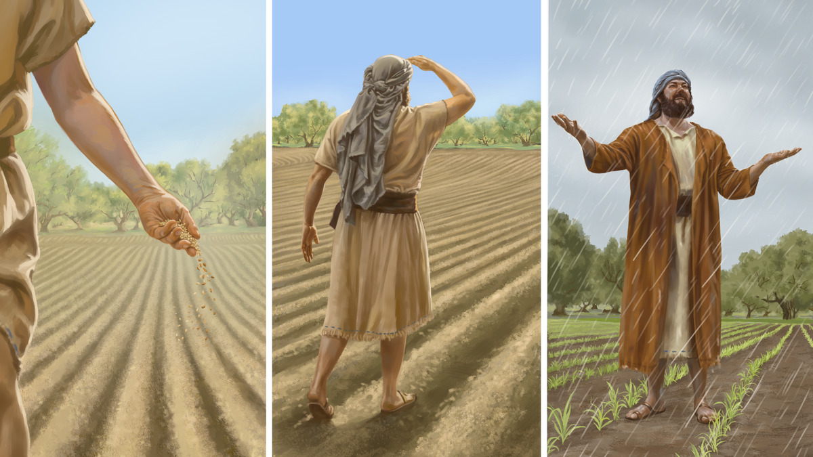

-
-
Чи вам подобається мати справу з терпеливими людьми? Чому?
- ПОГОДЬТЕСЯ, так приємно мати справу з терпеливими людьми! Вони не дратуються, коли ми змушуємо їх чекати, і з розумінням ставляться до наших помилок. А згадаймо, скільки витримки знадобилося тим, хто вивчав з нами Біблію. Напевно, далеко не всі біблійні істини ми відразу зрозуміли і почали застосовувати. Але, звичайно, ніхто не виявляє до нас стільки терпіння, як наш Бог, Єгова. Які ж ми йому за це вдячні! (Рим. 2:4).
-
Коли нам може бракувати терпіння?
- 2 Хоча всім подобаються терпеливі люди, далеко не всім вдається самим такими бути. Наприклад, не так вже й легко залишатися спокійним, коли стоїш у заторі, а час піджимає, або тримати себе в руках, коли тебе хтось дратує. А як же часом складно чекати на обіцяний Єговою новий світ. Чи ви хотіли би стати більш терпеливими? Тоді ця стаття для вас. Ми розглянемо, в чому виявляється терпеливість, чому так важливо розвивати цю рису і як нам це робити.
-
ТЕРПЕЛИВА ЛЮДИНА. ЯКА ВОНА?
-
Як поводиться терпелива людина, коли її провокують?
- 3 Як би ви описали терпеливу людину? Мабуть, ви сказали б, що її важко вивести з рівноваги. Вона не піддається на провокації і не поводиться різко, коли не в настрої. Таку людину можна назвати негнівливою. Цікаво, що в Біблії ця грань терпеливості вперше згадується у Вихід 34:6, де говориться про Єгову. Там сказано, що він «Бог милосердний і співчутливий, негнівливий, сповнений відданої любові та у всьому правдивий».
-
Як поводиться терпелива людина, коли їй доводиться довго чекати?
- 4 А ще терпелива людина вміє чекати. Вона не дратується, якщо якась справа забирає більше часу, ніж очікувалося (Матв. 18:26, 27). Коли нам може знадобитися це вміння? Наприклад, коли треба вислухати когось не перебиваючи (Йова 36:2). Або коли нашому зацікавленому довго не вдається зрозуміти якусь біблійну істину чи позбутися поганої звички.
-
У чому ще виявляється терпеливість?
- 5 Крім того, терпелива людина нічого не робить поспіхом. Звичайно, деякі ситуації вимагають від нас швидкої реакції. Але якщо вам доручили важливе завдання, не варто відразу за нього братися. Ліпше не спішити, все добре обдумати і виділити достатньо часу для того, щоб виконати роботу якісно.
-
Як терпелива людина зносить труднощі?
- 6 І, зрештою, терпелива людина не нарікає, коли зносить труднощі. У цьому розумінні терпеливість є синонімом витривалості. Звичайно, немає нічого поганого в тому, щоб пожалітися на свої проблеми близькому другу. Все ж треба старатися зберігати оптимізм і не падати духом (Кол. 1:11). У цьому підзаголовку ми розглянули, в чому виявляється терпеливість. Але чому нам так важливо мати цю рису? На це є кілька причин.
-
ЧОМУ НАМ ПОТРІБНО БУТИ ТЕРПЕЛИВИМИ
Рільник не сумнівається, що одного дня збере врожай, тому терпеливо його чекає. Подібно й ми не сумніваємося, що Єгова сповнить усі свої обіцянки, тому терпеливо чекаємо цього часу. (Дивіться абзац 7)
-
Чому, згідно з Якова 5:7, 8, нам важливо бути терпеливими? (Дивіться також ілюстрацію.)
- 7 Якщо нам бракує терпіння, ми ризикуємо не отримати вічного життя. Так само як Божим служителям у давнину, нам необхідно терпеливо чекати, коли Бог сповнить усі свої обіцянки (Євр. 6:11, 12). Біблія порівнює нас з рільниками. (Прочитайте Якова 5:7, 8.) Чи рільник знає, коли саме можна буде збирати врожай? Ні. Але він точно знає, що цей день прийде. Тому він старанно працює на полі, сіє насіння, поливає і терпеливо чекає, коли його праця принесе плоди. Подібно і ми не знаємо, «в який день прийде [наш] Господь» (Матв. 24:42). Але ми впевнені, що цей день обов’язково настане і Єгова виконає усі свої обіцянки. Тому ми терпеливо чекаємо і залишаємось активними у служінні. Ми розуміємо, що якщо втратимо терпеливість, то зрештою нам набридне чекати і ми почнемо віддалятися від Єгови. Для нас важливішими стануть насолоди, які можна отримати тут і зараз. Тож залишаймось терпеливими до самого кінця, адже тільки тоді ми зможемо спастися (Мих. 7:7; Матв. 24:13).
-
Як терпеливість допомагає підтримувати добрі стосунки з іншими? (Колоссян 3:12, 13).
- 8 Терпеливість допомагає нам підтримувати добрі стосунки з іншими. Ця риса робить нас хорошими слухачами (Як. 1:19). Крім того, вона сприяє миру. Якщо ми терпеливі, то будемо тримати себе в руках і не станемо грубити іншим у стресових ситуаціях. Коли хтось недобре з нами обійдеться, ми не дамо волю гніву і не відплатимо йому тією ж монетою, а застосуємо пораду апостола Павла: «Продовжуйте терпіти і з готовністю прощати одне одного». (Прочитайте Колоссян 3:12, 13.)
-
Як терпеливість допомагає нам приймати мудрі рішення? (Прислів’я 21:5).
- 9 А ще терпеливість допомагає нам приймати виважені рішення. Завдяки їй ми не будемо діяти поспіхом чи на емоціях, а виділимо час на те, щоб зібрати побільше інформації і все добре обдумати. (Прочитайте Прислів’я 21:5.) Наприклад, якщо ми шукаємо роботу і в нас з’явився якийсь варіант, ми не будемо відразу на нього погоджуватись, а спочатку дізнаємося, скільки часу в нас забиратиме дорога туди й назад і який в нас буде робочий графік. Також ми подумаємо, чи дозволятиме нам ця робота приділяти достатньо уваги сім’ї і духовним справам. Таким чином терпеливість вбереже нас від помилки.
-